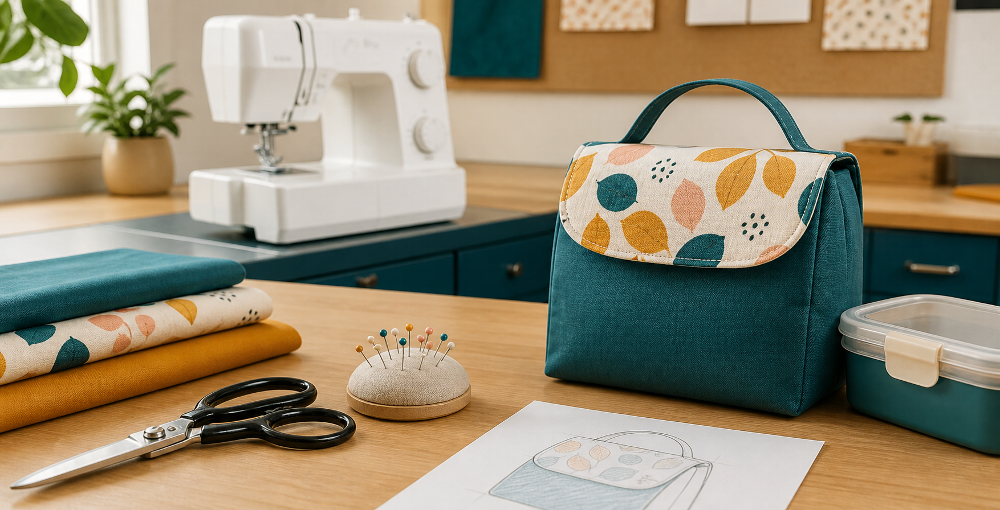
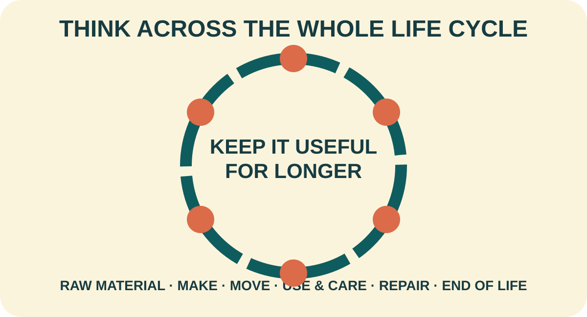

1. Learn deeply
Read textiles-specific theory, interpret purposeful photographs and diagrams, and use the module presentation.
Year 7/8 Technology Mandatory · Textiles
Investigate textiles and lunch waste, develop a reusable lunch bag, learn safe sewing routines and explain the evidence behind your final design.

Your design challenge
Respond to a real need by designing and producing a textile lunch bag for an intended user.
How the course works
Move from the need statement and textiles investigation through machine systems, concepts, planning, testing and evaluation.
Read textiles-specific theory, interpret purposeful photographs and diagrams, and use the module presentation.
Answer ten questions for every theory section and return to the exact section when feedback directs you.
Compare samples, investigate scenarios, develop concepts and record real decisions.
Use My folio to review the evidence, print it or keep a backup.
Student evidence. Every project field autosaves into My folio. Browser storage is device-local working evidence.
Your project, in one clear pathway
The Classroom workbook sequence is now ten varied project studios. Work moves from the need statement and textiles investigation through machine systems, concept development, construction planning, testing and evaluation.
Calculated from checks, written responses and project activities saved in this browser.
Your design challenge
Respond to a real need by designing and producing a textile lunch bag for an intended user. The exact pattern, dimensions, materials, construction details and submission arrangements are Teacher to confirm.
Read textiles-specific theory, interpret purposeful photographs and diagrams, and use each module presentation to build understanding.
Answer ten questions for every theory section. Feedback points to the exact section to revisit without revealing the answer.
Compare samples, investigate scenarios, develop concepts and record real decisions. Every field autosaves into My folio.
Ten-module pathway
Module 1
Unpack the need, user, criteria, constraints and evidence.
Open Module 1 →Module 2
Connect fibres, yarns, fabrics, products and material properties.
Open Module 2 →Module 3
Investigate lunch waste, life cycles and realistic personal action.
Open Module 3 →Module 4
Recognise hazards and organise a calm, controlled workspace.
Open Module 4 →Module 5
Research lunch bags, generate concepts and justify a final direction.
Open Module 5 →Module 6
Explain the parts and systems that form a controlled stitch.
Open Module 6 →Module 7
Follow demonstrated setup routines and read stitch-quality evidence.
Open Module 7 →Module 8
Plan, sample and refine an appropriate decorative technique.
Open Module 8 →Module 9
Sequence production, control quality and capture authentic evidence.
Open Module 9 →Module 10
Test against criteria, make evidence-based judgements and reflect.
Open Module 10 →
Responsible design
Material choice matters, but so do durability, repair, care and behaviour. Compare the whole life cycle before making a sustainability claim.
Explore the life cycleReady to collect evidence?
Review saved responses, add project evidence, download a backup or print a clean copy at any time.